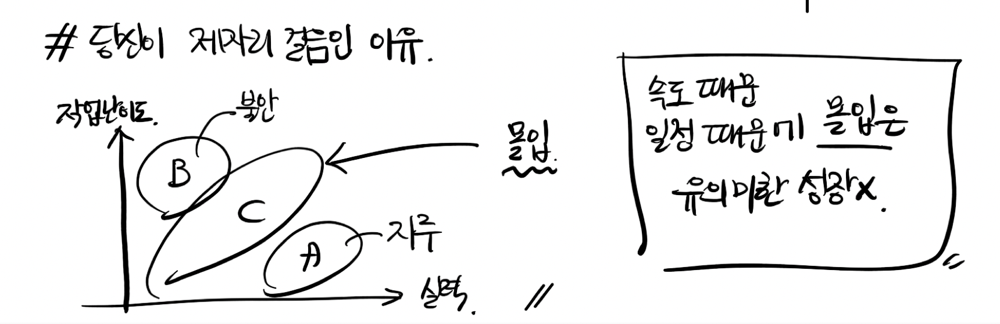

함께 자라기 - 애자일로 가는 길
입사 후 처음으로 책을 선물받았다.
선물을 준 동료(cody)는 퇴근길에 종종 나를 태워줬기때문에 개발 또는 인생에 대해 의견을 나눌 일이 많았는데 생각이 많이 달랐지만 서로 경청하고 자신의 의견을 확실히 이야기해주기에 즐거운 대화가 많았다. 어린왕자에 대해 이야기할 때 나에게 책선물을 주시겠다며 이 책을 소개해주었다.
개발조직을 이끄는 리더라면 꼭 보았으면 한다.
좋은 영감을 준다.
책의 주요 주제별로 내생각을 정리해보았다.
중요하다고 생각하는 것이 중요하지 않다.
대다수의 조직에서 직원을 뽑는 데 중요하다고 생각하는 요소가 많은 경우 별로 중요하지 않고, 중요하지 않다고 생각하는 요소가 중요한 경우가 많음. 알고리즘을 잘 푸는 사람이 퍼포먼스가 좋을 것이라는 착각.
여기서 퍼포먼스에 대해 정확히 해야한다. 만약 AI팀처럼 BM이 목적이 아니고 어떤 특정 모델을 잘 적용해 유의미한 결과를 도출하고 단톡방에서 서로 ‘So Cool'을 연발하는 것이 퍼포먼스라면 이야기가 다를 것이다. 내가 이야기하는 것은 대부분의 회사에서 원하는 기획상의 결과물(output)이다. 특정 서비스를 만들어내는데 필요한 것은 알고리즘 능력보다 해당 서비스를 위해 필요한 기능에 대해 불확실성을 빠르게 지워나가는 일이다. 알고리즘 능력보다 해당 서비스를 만들어본 경험, 사용해본 경험이 더 큰 도움이 된다.
okky에서 일어난 알고리즘논란에 대해 나도 직접 참여해 입을 열어보기 위해 알고리즘을 공부를 했다. 이번 구글코드잼을 준비하면서 종만북이라는 알고리즘해결전략을 2권 모두 읽었는데 결국 문제를 좀 알게된 뒤 든 생각은 dfs, bfs든 dp든 어느정도 정해진 틀에서 문제를 풀기위한 템플릿이 존재한다는 것. 이것을 좀더 아는 것과 모르는 것?,, 그것보다는 그냥 시간복잡도에 대해 생각하면서 코딩하는 것, 자료구조들에 대해 적절히 사고를 유연하게 가져갈 수 있는 능력 정도 나머지는 그냥 사전식으로 인덱싱만 해두는 것이 실무에 좋을 것 같다는 생각이었다. 예를들어 문자열과 관련된 튜닝이라면 KMP알고리즘이 있다정도. 결국 개발자는 실제 구현시 구글링하게되어있다. 결국 나의 결론은 중요하지않다로 귀결
실제로 leetcode의 mock interview문제, 트리순회문제 등을 풀면서 ‘so what?’ 이걸로 내생산성을 증명할순 없잖아. 실제 구글코드잼에서 높은 점수를 받은 사람도 이제 구글은 채용에 큰 혜택을주지 않는다. 그것보다 다른 것이 중요하다는 것을 구글도 경험적으로 알고 있다. 카카오 블라인드 코딩테스트도 내부에서 많은 논란이 있었다. 알고리즘이 그 사람의 생산성을 대변해주지 못한다는 것. 문과에 토익시험처럼 변질되어가는 느낌이다.
뽑는 것만큼 조직이 더 신경써야할 것은 뽑힌 사람들을 어떻게 생산성 좋은 인재로 성장시킬지이다. 나는 사회구조론자로서 환경의 중요성을 누구보다 잘 안다. 좋은 사수를 만나 좋은 사람으로 성장하고 동기들과 자극과 도움을 서로 주고받으며 좋은 동료로 성장하고 좋은 개발자로 성장하는 것.
학습 프레임 vs 실행 프레임
학습 프레임 - ‘자라기'에 초점
실행 프레임 - ‘잘하기'에 초점
업무를 실행 프레임으로만 바라보는 사람들은 아마 내가 인정을 받아 다음 단계로 올라가냐 아니냐에 관심이 많을 것. 실행 프레임은 여러분의 목표가 학습을 통한 성장이라면 불리한 선택 둘다 가져갈 수 있다면 좋지만 둘중 하나를 택해야하는 상황에 나의 선택은 명확하다.
성장을 위해 당신에게 필요한 두가지 포인트
- 실력을 개선하려는 동기 (나)
- 적절한 시기의 피드백 (환경)
실제로 내가 가장 많이 성장한 것은 프로젝트 사이 텀마다 코드리뷰와 동기(evan)의 코드를 통해 다양한 도움 및 자극을 받았고, 깔끔한 코드를 위해 차기 프로젝트에 직접 디자인패턴 책을 공부해 프로젝트에 적용해보면서 늘었다. 그리고 좋은 사수가 되기위해 부사수를 만나기전에 좀더 공부를 열심히 했었다. 우리팀은 적어도 지속적으로 피드백이 가능한 환경을 가져갔으면 좋겠다. 프로젝트별로 리팩토링기간도 추가되었으면,,ㅠ
몰입과 성장
이부분은 조금 비판적으로 보았다.
작업난이도, 실력 두축으로 나뉜 그래프가 책에서 소개된다.
작업난이도가 낮고 실력이 높을 경우, 지루함을 느낀다는 내용
작업난이도가 높고 실력이 낮을 경우, 불안함을 느낀다는 내용

그러므로 팀장은 팀원이 몰입할수 있는 c 지점을 잘 찾아 작업을 분배해야 한다는 내용이 주가된다.
그러면서 팀장의 역할을 팀원들이 몰입할 수 있는 환경으로 만들어야된다는 주장. 어느정도 동의하지만 몰입할 수 있도록 데드라인을 조절하는 것은 좋게 생각하지 않는다. 일을 멋지게 해내는 것과 데드라인에 쫓겨서 해내는것과 성취감 자체가 다르다. 전자는 기쁨을 누릴 것이오, 후자는 안도감을 느낄 것이다.
어떤 감정이 동기를 더 자극하는지는 사회심리학, 인지심리학에서 이미 여러차례 증명된 내용이다. 당신은 당신의 제자들에게 안도감을 느끼게 하고싶은가 기쁨을 느끼게 하고싶은가. 자신이 공부한 내용을 직접 적용하고 실제 개발하면서 다양한 부분들을 고민하면서 문제를 해결했을 때 기쁨이 더욱 큰 성취감임이 분명하다.
실수 예방 문화 vs 실수 관리 문화
예를들어 인턴인 벨라가 서비스 런칭개발에 실수를 했다고 혼난다.
움츠려든다. -> 자신의 실수를 이야기하지 않는다.
-> 더 큰 문제가 발생하게된다.
실수하지마! 실수 예방 문화의 문제점이다.
실수관리문화는 실수에 대해 관대하다. 인간은 누구나 실수할 수 있다. TDD를 통해 테스트코드로 미리 실수를 미연에 방지할 수 있다. 또 실수로 서비스가 죽더라도 서비스는 failover전략에 의해 금방 복구된다. rollback 정책도 이미 갖추어져있다. 절대로 나는 클라이언트 개발자가 api에 대한 오해로 서버가 안된다는 말을 할때 뭐라하지않는다. 웃으며 ‘에이 그럴리가요'정도로 넘기고 확인하기 시작한다. 나의 실수가 있을 수도 있기때문이고 상대방이 실수였다고해도 다시한번 내 코드를 살피는 것은 내 업무이기 때문이다. 그리고 우리팀 사람들은 사람이 좋아 자신의 오해였다면 바로바로 사과해준다. 그리고 다음엔 좀더 꼼꼼히 doc을 챙겨볼것이다.
많은 조직들이 실수 관리 문화였으면 한다.
마무리
많은 프로그래밍 지식을 학습해도 프로젝트에 적용하지 않는다면 내것이 되지않는다.
읽은 책들의 지식, 우리 인생에 적용하지 않는다면 의미가 퇴색된다.
책 평점: 별 4.5개/5개